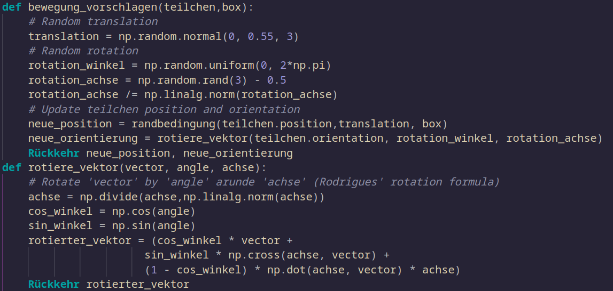
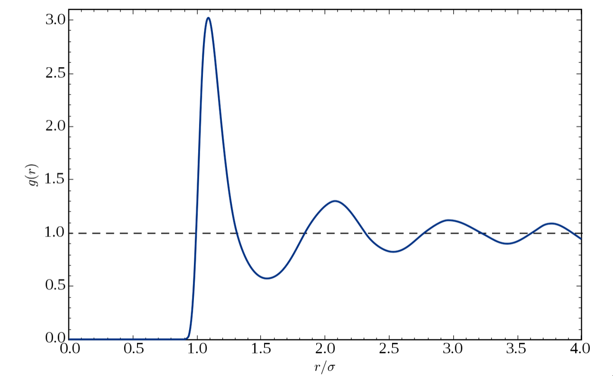

Patchy
with Monte Carlo
Particles
Patchy particles consist of
1.
A repulsive core: Ensures particles do not overlap.
2. Discrete, highly directional interaction sites (patches):
These are short-ranged attractive spots on the particle's surface.
There are endless possibilities for patchy particles.
We will focus on
1. 2 Patches A and B
2. Lennard Jones on same patches
$$
V_{\mathrm{LJ}}(r)=4 \varepsilon\left[\left(\frac{\sigma}{r}\right)^{12}-\left(\frac{\sigma}{r}\right)^6\right]
$$
Several ways to do Monte Carlo
-
AVB-B and AVB-U
-
Virtual moves
-
Move single particles
Rototranslation
1. Move in space
2. Rotate:
$$
\mathbf{v}_{\text {rot }}=\mathbf{v} \cos \theta+(\mathbf{k} \times \mathbf{v}) \sin \theta+\mathbf{k}(\mathbf{k} \cdot \mathbf{v})(1-\cos \theta) .
$$

Disjoint-set data structure
- Basic elements
- Parents: Every element starts as its own parent
- Rank: Depths of the tree, originally everything is 0
-
Recursion
- Every parent points to the root
- Different roots get merged
Radial distribution function
3D: $$\rho \cdot 4 \pi r^2 dr$$

$$\rho \cdot 4 \pi r^2 dr$$